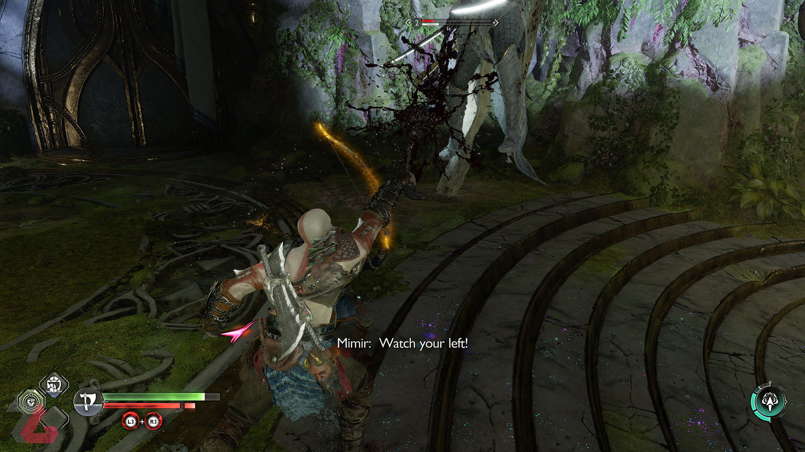

بررسی بازی God of War Ragnarok

نویسنده : محمد صادق تواضعی
1401/10/17
God of War Ragnarok دنبالهای درخور و تجربهای لازم برای هواداران بازیهای ویدیویی است و میتواند تجربهای فراموش نشدنیای را برایتان رقم بزند. با بررسی این بازی همراه زومجی باشید.
اولین نسخه از مجموعه God of War در سال ۲۰۰۵ منتشر شد و توانست بازخوردهای بسیار خوبی را کسب کند و پس از پایان سومین نسخه، کاربران در این فکر فرو رفتند که آیا در آینده، باز هم کریتوس را خواهیم دید؟ آیا واقعا مرده است؟ مجموعه God of War یکی از بهترینهای صنعت بازیهای ویدیویی در سبک هک اند اسلش است و هر نسخه از آن، بهواسطه سیستم مبارزاتاش این گفته را تصدیق میکند. بااینحال سونی در نسل هشتم بازیهای ویدیویی کریتوس را وارد نورس کرد و دیدار مجدد کاربران با کریتوس پیر و تجربه محصولی که نسبت به نسخه پیشین خود تغییرات بسیاری کرده، حسابی کاربران را شگفتزده کرد. ازاینرو God of War Ragnarok را صادقانه میتوان مورد انتظارترین بازی انحصاری سونی در نسل نهم و تا به اینجای کار قلمداد کرد که چندی پیش عرضه شد. اگر بخواهم قبل از هر چیزی بازی را در یک جمله توصیف کنم، خدای جنگ رگناروک اثری است که مدام با احساسات شما بازی کرده و در انتها، ساعتها به نحوه پایان آن فکر خواهید کرد.
داستان بازی دنباله نسخه قبلی است. کریتوس و اترئوس به شکار رفته و در راه بازگشت، فِرِیا به آنها حمله میکند. شخصیکه بهدنبال کشته شدن بالدور بهدست کریتوس، تنها به انتقام فکر میکند. بااینحال خطری بزرگتر به نام رگناروک در راه است و اترئوس قصد دارد بهواسطه پیدا کردن تیِر، خدای جنگ نورس، جلوی رگناروک را بگیرد که همه چیز مطابق میل او پیش نمیرود. مقدمه God of War Ragnarok هیجانانگیز و امیدوار کننده است تا محصولی بینقص از نظر روایت داستان و شخصیتپردازی را مشاهده کنیم. بااینحال پس از عبور از یک سوم ابتدایی بازی، داستان و روایت آن در یک مسیر ملایم و یکنواخت قرار میگیرد. البته که این یکنواختی مورد بدی نیست و با روایت مناسب و دقیق، شاهد زمینهچینی برای اتفاقاتی هستیم که در یک سوم انتهایی داستان رخ میدهد. همچنین پایانبندی بازی را میتوان گل سر سبد روایت داستانی رگناروک دانست و پس از مشاهده آن، ساعتها با خود فکر خواهید کرد و تئوریهای مختلفی را تجسم میکنید. اما، در انتها به این نتیجه میرسید که استودیو سونی سانتا مونیکا با این جمعبندی بهترین مسیر را پیش گرفته است. شخصیتپردازی یکی دیگر از مواردی است که باعث جذابیت داستان God of War Ragnarok شده است. کریتوس، اترئوس و فریا هرکدام به بهترین شکل ممکن شخصیتپردازی شدهاند.
رابطه پدر و پسری کریتوس و اترئوس نقش پررنگتری در این نسخه دارد و رگناروک را میتوان یک آرک داستانی بسیار خوب برای رستگاری شخصیتی کریتوس دانست و همچنین اترئوس هم نقش پررنگتری را در داستان ایفا میکند. ازاینرو پرداخت به وی بهتر از قبل بوده و کاربر میتواند حسابی با اترئوس ارتباط برقرار کند. دراینمیان فریا که در غم و اندوه از دست دادن بالدور است، تنها به انتقام فکر میکند، اما این تمام چیزی نیست که تیم نویسندگی سانتا مونیکا برای مخاطب تدارک دیده است. روند تکامل سه شخصیت ذکر شده به مرور زمان، موردی است که این سه کاراکتر را خاص کرده است. همین مورد برای شخصیتهای منفی بازی نظیر اودین و ثور هم صدق میکند. رابطه پدر و پسری در GoW Ragnarok فقط به کریتوس و اترئوس ختم نمیشود، بلکه اودین و ثور هم فراز و نشیبهای خود را دارند که به بهترین شکل ممکن این موارد نشان داده میشود. نکته بسیار خوب شخصیتپردازی در اینجا، صرفا به کاراکترهای اصلی ختم نمیشود، بلکه تمامی کاراکترهای جهان بازی که در داستان حضور دارند، نظیر بروک، سیندری و تیر، شخصیتپردازی بسیار خوبی داشته و نقش کلیدیای را در داستان ایفا میکنند. تیم سازنده به شخصیتپردازی کاراکترها توجه ویژهای کرده و همین مورد هم سبب شده تا داستانسرایی و قصه God of War Ragnarok، بی عیب و نقص باشد.
پایه و اساس گیمپلی God of War Ragnarok موردی است که در سال ۲۰۱۸ مشاهده کردیم، اما در اینجا گستردهتر از قبل شده تا کاربر بتواند تجربهای عمیقتر و بهتر را کسب کند. کریتوس بهواسطهی تبر لوایتان و Blade of Chaos دشمنان خود را سلاخی میکند. همانند گذشته، میتوانید برای نابودی دشمنان از هر دو سلاح استفاده کرده و بعضی از آنها، بهواسطهی نقاط ضعف و قوتی که دارند، باید با یکی از سلاحهای ذکر شده از بین بروند. حال Blade of Chaos تاثیر بیشتری روی گیمپلی و حل پازلها دارد. همچنین در بعضی از سکوبازیها، بیشازپیش از این شمشیر دوست داشتنی استفاده شده است. البته که دو سلاح ذکر شده، تنها مواردی نیستند که کریتوس ازطریق آنها دشمنان خود را از بین میبرد، بلکه استفاده از شیلد و مشت زدن درکنار Rage Mode و استفاده از مهارت کاراکتر همراه خود، از جمله موارد دیگری هستند که میتوانید از آنها کمک بگیرید. یکی از لازمههای اصلی در حین انجام مبارزات، پر کردن نوار Stun دشمنان و باسها است. ازاینرو میتوانید با پر کردن این بخش یک ضربه تمام کننده را روی آنها اعمال کرده یا بخش زیادی از نوار سلامت حریف خود را خالی کنید.
ازطرفی بازیکنان بهلطف سیستم ارتقا و Skillهای بازی میتوانند شیوه مبارزهای خود را شخصیسازی کنند. درجریان سیستم ارتقا God of War Ragnarok، کاربر میتواند با ارتقای سلاحها، شیلد و ساخت و ارتقای Armorهای جدیدتر، سطح کریتوس را افزایش دهد. همچنین با خرید مهارتهای مختلف برای سلاحهای خود و همچنین همراه خود، مبارزات را شخصیسازی کنید. برای مثال، اگر میخواهید قدرت Runicهای استفاده شده روی سلاحهایتان را افزایش دهید، استفاده از Armor و آیتمهایی برای افزایش قدرت Runic Attack و کاهش زمان استفاده مجدد، میتواند گزینه مناسبی باشد یا اینکه بهسراغ مواردی بروید که تمرکز خاصی روی میزان قدرت آسیبرسانی، قدرت سیستم دفاعی و افزایش نوار سلامتتان دارد. یکی از مواردی که باعث اهمیت بیشتر نحوه مبارزه و ارتقا کاراکتر شده، طراحی درجه سختی دشمنان و مکانیسمهای مبارزهای آنها است. دراینجا شاهد دشمنان معمولی، دشمنان الیت و مینی باسهایی هستیم که بعضی از آنها حسابی مخاطب را به چالش میکشند و اگر در سطح مناسبی قرار نداشته باشید، امکان اذیت شدنتان وجود دارد. همچنین باسهای اصلی بازی هم طراحی بسیار خوبی دارند و از نظر تعداد هم قابل قبول هستند. گسترش گیمپلی God of War Ragnarok فقط به عمیقتر شدن سیستم مبارزات و ارتقا و همچنین دشمنان بازی ختم نمیشود، بلکه از نظر گشتوگذار و طراحی مراحل اصلی و فرعی هم بازی نسبت به نسخه پیشین خود پیشرفت داشته است.
همچنان با گشتوگذار در سرزمینهای God of War Ragnarok میتوانید صندوقهای متفاوتی را پیدا کنید. بعضی از این صندوقها منابع مورد نیاز در راستای ارتقای سلاح، Armor و موارد مورد نیاز برای ساختوساز را دراختیارتان قرار میدهند. این در حالی است که بعضی دیگر آیتمهای مد نظر برای ارتقای نوار سلامت و نوار Rage را ارائه میدهند. همچنین مأموریتهای فرعی با اینکه میتوانستند بهتر باشند، اما شما را به گشتوگذار بیشتر مجبور میکنند. این گشتوگذار بیشتر و کامل کردن مأموریتها، باعث میشود تا هم از نظر داستانی فهم و درک بهتری داشته باشید و هم اینکه پاداش درخوری را کسب خواهید کرد. مراحل اصلی هم طراحی بسیار خوبی دارند و بهخوبی میتوانند شما را غافلگیر کرده و در بعضی از سکانسها با احساسات مخاطب بازی کنند. درکل، تجربهی God of War Ragnarok و محتوای داستانی آن بههمراه تعدادی از مراحل فرعی، تقریبا ۲۰ الی ۲۵ ساعت زمان میبرد. البته که برای گشتوگذار کامل درجهان بازی و مشاهده تمامی محتویات نظیر کامل کردن تمامی مأموریتهای فرعی، ارتقای کامل نوار Rage و نوار سلامت و ازبینبردن تمامی کلاغهای اودین درکنار پیدا کردن تمامی Relicها، به زمان بسیار بیشتری نیاز دارید. گیمپلی رگناروک شاید همانند نسخه پیشین یک انقلاب و ساختار شکنی برای مجموعه نباشد، اما بهخوبی المانهای گذشته را استفاده کرده و آنها را در مسیر درستی گسترش داده است. زیرا، ساختار گیمپلی این نسخه بهلطف اهمیت بیشتر اترئوس در داستان دست خوش تغییراتی شده و شاهد تجربهای متنوعتر نسبتبه گذشته هستیم.
God of War Ragnarok از نظر بصری یک دستاورد فوقالعاده و چشمنواز به حساب میآیند. جلوههای بصری و نورپردازیها باعث شده تا بعضی از مناظر بازی خیرهکننده و عالی باشند. همچنین طراحی چهره کاراکترها بسیار دقیق و با جزئیات کار شده و در سکانسهای احساسی مختلف، شخصیتها بهخوبی حس و حال خود را بهنمایش میگذارند. میانپردههای سینمایی بازی هم طراحی خوبی دارند و نقش مهمی را در بازگو کردن داستان فراهم میکنند. میانپردههایی که در بعضی از مواقع شما را خشمگین کرده و بعضی وقتها هم ناراحت شده و بغض وجود شما را فرا میگیرد. جدا از موارد ذکر شده در بخش طراحی، هر یک از Realmهای بازی طراحی منحصربهفردی دارند و دشمنان و باسهای بازی هم متنوع هستند. از نظر فنی هم بازی عملکرد خوبی دارد و کاربران پلی استیشن 5 با دو حالت مختلف قادر به تجربهی بازی هستند. اگر میخواهید با رزولوشن 4K و نرخ ۳۰ فریم برثانیه رگناروک را تجربه کنید، Favor Quality گزینه مناسبی است و اگر میخواهید با رزولوشن 1440p و نرخ ۶۰ فریم برثانیه مشغول تجربه بازی شوید، باید بهسراغ Favor Performance بروید. فارغ از انتخاب شما، بازی بدون افت فریم و باگ خاصی اجرا شده و تجربهی روانی را کسب خواهید کرد.
موسیقی یکی از ارکان اصلی دیگر بازی God of War Ragnarok به حساب میآید. مهم نیست که در حال مبارزه یا نبرد با باسها هستید یا میانپردههای سینمایی بازی را تماشا میکنید، موسیقی نقش مهمی در القای اتمسفر و فضاسازی بازی دارد و بیر مکرری، فوقالعاده کار کرده است. همچنین دیالوگهای بازی هم در سطح بسیار خوبی قرار داشته و حتی در حین مبارزه با بعضی از باسهای اصلی هم شاهد دیالوگهای داستان محور و جالبی میان کاراکترها هستیم. در انتها God of War Ragnarok دقیقا همان محصولی است که کاربران منتظر آن بودند و بااینکه مراحل فرعی میتوانستند بهتر باشند، اما تجربهی کلیای که ارائه میشود، درحدی کامل و قوی است که این مورد را در خود حل کند. مهم نیست که به چه سبک از بازیهای ویدیویی علاقهمند هستید، God of War Ragnarok بهراحتی میتواند شما را در خود غرق کند و یک تجربه ضروری برای کاربران پلی استیشن به حساب میآید.


متن دیدگاه